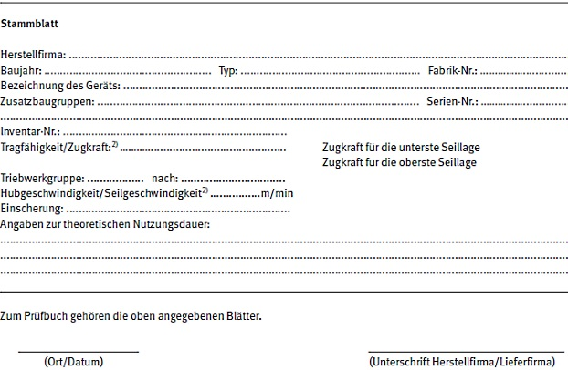

Inhaltsverzeichnis |
| Das Prüfbuch besteht aus: |
| Hinweise für die Prüfung von Winden, Hub- und Zuggeräten |
| 1 | Vorbemerkung | |
| 2 | Art und Umfang der Prüfungen | |
| 3 | Hinweise für die Durchführung der Prüfung |

1) Vordruck ist nicht vorgesehen
2) Nichtzutreffendes bitte streichen